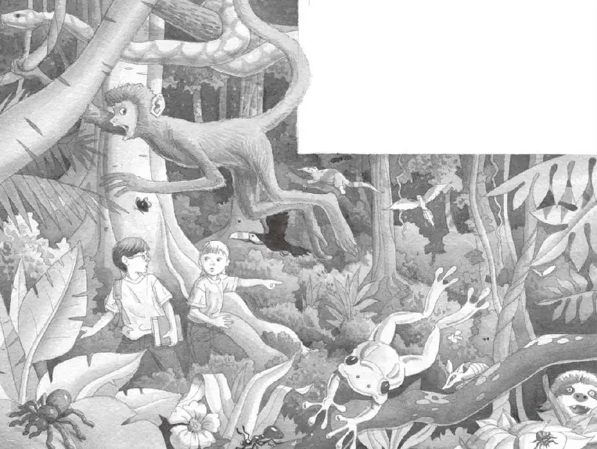

杰克没有动弹。他只是一个劲儿地盯着下面。
“出什么事了？”安妮在上面大声问道。
杰克没有回答。
“你不会看见什么巨型蜘蛛了吧？”安妮问。
“呃……没有。”杰克深深吸了口气。
“我们必须继续下去。”他想，“我们必须为仙女摩根找到那样东西。”
“没有蜘蛛，没有什么可怕的东西。”杰克喊完，又开始顺着绳梯往下爬。
杰克和安妮向下穿过林下叶层，最后踏在地面层上。
这里一片昏暗，只有几道阳光斜射下来。
这里的树木都很高大，且枝繁叶茂，到处都是垂着的藤蔓和苔藓植物。地面上覆盖着厚厚的落叶。
“不要轻举妄动，我先查一下书。”杰克说。
他从背包里抽出热带雨林书，找到一幅图片，图片上画的正是树下的这个昏暗的世界。
在热带雨林里，许多生物会跟周围的环境融为一体。这种自我保护的方法被称作“伪装”。
“哦，天哪。”杰克合上书，打量着周围说，“这下面有一大堆生物呢，只是我们看不见它们。”
“真的？”安妮轻声问。
她和杰克在寂静的森林里四处张望。杰克感到有一些眼睛在暗处盯着他们。
“我们赶紧去找那样东西吧。”安妮压低声音说。
“可是上哪儿去找呢？”杰克问。
“我想我们马上就会知道的。”安妮说。她在昏暗的光线里转过身，往前走去。
杰克跟了上去。两人在高耸入云的大树间缓慢行走着，绕过了垂下来的藤蔓。
安妮突然停住脚步，说：“等一等!那是什么？”
“什么？”
“听，那个奇怪的声音。”
杰克仔细听了听。他听见了一种咔咔声，像是有人踩着落叶走路的声音。
杰克看了看四周，一个人影也没有。
可是声音越来越响了。
是头野兽？还是条巨大的、没有被命名的虫子？
就在这时，沉寂的森林突然有了生气。
鸟儿扑啦啦地飞到空中。青蛙在树叶上跳来跳去。蜥蜴噌噌地爬上树干。
那个奇怪的声音越来越响了。
“也许书上会有解释。”杰克说。他翻开那本书，找到了一幅图片，上面画着各种不同的动物在一起奔跑。他读道：
动物们听到咔咔的声音时，就会惊慌逃窜。这声音说明，由三千万只食肉的行军蚁组成的大军，正在浩浩荡荡地爬过落叶。
“是行军蚁！”杰克喊道，“有好几千万只蚂蚁呢！”
“在哪儿？”安妮大叫。
杰克和安妮惊慌地四处张望。
“那儿！”安妮伸手指着。
行军蚁——好几千万、数不清的蚂蚁——正在密密麻麻地爬过落叶。
“快跑到树屋里去！”安妮大声喊道。
“树屋在哪儿？”杰克慌乱地转过身。所有的树看上去都一个样。绳梯在哪儿呢？
“快跑吧！”安妮嚷道。
杰克和安妮拔腿就跑。
他们跑过厚厚的落叶。
跑过粗粗的树干。
跑过垂着的藤蔓和苔藓植物。
他们从裸露的粗树根上爬过。
杰克看见前面有一块空地，空地上洒满了阳光。
“那边！”他大喊一声。

杰克和安妮赶忙朝那片阳光跑去，一路拨开茂密的灌木丛。
他们跑到了一条河的岸边。
两人盯着浑浊的河水，河水在缓慢流淌着。
“你觉得那些蚂蚁会往这边来吗？”安妮气喘吁吁地问。
“不知道。”杰克说，“但是，我们只要往河里蹚几步就安全了，蚂蚁是不会下水的。快走吧。”
“看！”安妮突然说道。
她指着河边一根晃晃荡荡的大木头。木头里面被掏空了。
“看上去像一条独木舟。”杰克说。
他仔细听了听远处咔咔的声音，说：“我们上去吧，快点儿！”
杰克把书塞进背包。然后，他和安妮小心翼翼地登上了那条独木舟。
安妮从里面探出身子，用双手把独木舟推离了河岸。
“等一等！”杰克说道，“我们没有桨！”
“哎呀！”安妮惊叫道。
可独木舟已经开始在浑浊的河里缓缓移动了。